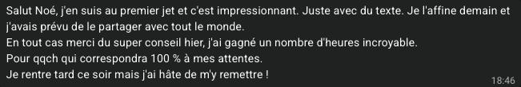

Jérémy B.
Architecte SI / Cloud, freelance
+10hpar semaine

Méthode CAP
En 30 jours, tu récupères toute ma machine — mes agents IA, prêts à brancher — et tu apprends à créer les tiens. Même si tu n'as jamais codé.


Ce que je te donne
Tu ne pars pas de zéro, et tu ne repars pas avec du travail en plus. Tu récupères les agents IA qui font tourner mon activité, puis je t'apprends à créer ceux dont la tienne a besoin.
01
Ceux que j'utilise tous les jours. Tu les branches sur ton activité dès la première semaine.
02
Ton activité a des tâches que personne d'autre n'a. Je t'apprends à construire les agents qui les prennent en charge, sans coder.
Tu repars autonome, pas dépendant de moi.
Tu utilises un outil puissant sans méthode.
Et un outil puissant sans méthode, ça donne des résultats ponctuels et une déception durable.
La preuve
Elaine L., en trois vidéos
Leurs messages, en entier
Jérémy B.
Architecte SI / Cloud, freelance
+10hpar semaine
Diane L.
Consultante IA et transformation digitale
+7hpar semaine

Michel Q.
Conseiller en gestion de patrimoine
+2h30par semaine

Ce qu'ils en disent, à chaud
Messages reçus pendant le programme.




Le mécanisme
Trois étapes — clarifier, automatiser, piloter. Et trois choses que tu récupères au passage : la lucidité, la capacité, le choix.
C
Tu vois enfin où part ton temps.
D'abord, la luciditéTu sais combien d'heures sont récupérables, lesquelles, et dans quel ordre les lâcher. Tu arrêtes de deviner ce qui te coûte du temps : tu le lis.
A
C'est là que les heures reviennent.
Puis, la capacitéTu ne gagnes pas trois automatisations. Tu gagnes l'équivalent d'un collaborateur qui connaît tes dossiers, écrit dans ton style et ne demande ni salaire ni formation. Mails, comptes-rendus, veille, relances, propositions : tout ce qui est répétable part sans toi.
P
Tu passes de l'autre côté.
Enfin, le choixTon activité tourne quand tu n'es pas devant. Et les heures récupérées, c'est toi qui décides quoi en faire : les remettre dans ton business pour aller chercher de la croissance, ou les rendre à tes proches.
Ce que c'est
Ce que ça n'est pas

Portrait — assets/img/noe/portrait.jpg
Ton formateur
Je n'ai pas appris à travailler avant l'IA pour ensuite essayer de l'y greffer — j'ai construit ma façon de travailler avec elle dès le départ. C'est pour ça que CAP n'est pas un rafistolage : c'est une méthode native.
Aujourd'hui je dirige PRCZ, une agence de stratégie IA pour PME. J'ai cartographié le temps de dizaines de solopreneurs et de cadres : entre 30 et 40 % de leur semaine était délégable. Et mon activité continue de tourner quand je suis à l'autre bout du monde — ce n'est pas un argument de style de vie, c'est la seule preuve qui compte : le système fonctionne sans moi.
Ce que je ne fais plus moi-même
68 heures par semaine, au total.
Le programme
30 jours, c'est le délai pour atteindre 14h — pas la durée de ton accès. Le programme repose sur des modules asynchrones et un mastermind hebdomadaire. Les 30 jours mesurent le temps qu'il faut pour que le résultat apparaisse au méta-audit.
01
Des vidéos courtes et actionnables, à consommer à ton rythme, dans l'ordre de la méthode. Chacune déploie une brique de CAP sur ton activité — tu la regardes, tu l'appliques, tu passes à la suivante.
02
Le rendez-vous vivant : tu viens avec ton cas réel, on le traite en direct. Le créneau n'est pas imposé — je fais un sondage chaque semaine pour caler l'heure sur les disponibilités du groupe.
03
L'information que tout le monde cherche et que personne n'affiche. Moins que tu ne crois : mes agents arrivent prêts, tu les branches au lieu de les construire. Compte quelques heures par semaine sur le premier mois, le temps de les régler sur ton activité et de créer les tiens. Ensuite, ce sont eux qui travaillent.
04
Tu ne pars pas d'une page blanche : tous mes agents IA sont prêts à être branchés sur ton activité.
05
Semaine 1
Clarifier
Vingt minutes de conversation avec Claude, et ta semaine est écrite ligne par ligne. Tu ressors avec ton chiffre et ton plan.
Semaine 2
Automatiser — les bases
Claude pose lui-même les premières pièces : ta façon d'écrire, tes offres, tes procédures. Premières heures récupérées.
Semaine 3
Automatiser — les branchements
On branche tes outils : boîte mail, agenda, connecteurs. Les tâches récurrentes se déclenchent toutes seules.
Semaine 4
Piloter
Tu valides au lieu d'exécuter. On reprend le chiffre du départ : l'écart, c'est ton résultat.
Qualification
Si tu portes seul un volume de travail pensé pour plusieurs personnes, tu es exactement au bon endroit.
Le diagnostic
Pas ton projet, pas tes ambitions — ta semaine réelle, avec ce qui la remplit.
C'est le début du méta-audit, en version courte.
Que tu rejoignes Le Cockpit Business ou non.
Si à la fin de l'appel ce n'est pas pour toi, je te le dirai. Je préfère un « non » clair à un participant qui n'avancera pas.
Questions
Le tarif se discute en appel, une fois qu'on a vu ensemble ce que tu peux réellement récupérer. Annoncer un prix sans connaître ton contexte n'a aucun sens : la seule question qui compte, c'est le rapport entre ce que ça coûte et ce que ça te rend.
C'est exactement le problème qu'on traite. La première étape ne demande pas d'apprendre quoi que ce soit : elle demande de regarder où part ton temps. Tout le reste part de là.
Et tu ne pars pas de zéro : mes agents sont livrés prêts à brancher. Compte quelques heures par semaine sur le premier mois, le temps de les régler sur ton activité. Après, ce sont eux qui travaillent. Les modules sont des vidéos courtes, consommables quand tu veux, et le créneau du mastermind est calé chaque semaine sur les disponibilités du groupe.
Non. Tu récupères d'abord toute ma machine : mes agents de prospection, de veille, de tri des mails, d'agenda, de PowerPoint, juridique, commercial et de contenus LinkedIn et Instagram, prêts à brancher.
Ensuite, je t'apprends à créer les tiens pour ce qui est propre à ton activité. C'est ce qui te rend autonome : le jour où ton activité change, tu sais adapter tes agents sans moi.
Presque tout le monde ici est dans ce cas. Ce n'est pas l'outil qui a échoué, c'est l'absence de méthode : des prompts isolés, sans contexte métier et sans logique d'intégration. C'est précisément ce que corrige la méthode CAP.
Il n'y a pas de garantie de remboursement, et je préfère le dire franchement. Le filtre se fait avant : si pendant l'appel je vois que ce n'est pas pour toi, je te le dis.
Non. Aucune ligne de code.
La suite
01Continuer comme aujourd'hui : subir le volume, repousser ce qui compte, espérer que ça se libère tout seul.
02Ou prendre 45 minutes pour voir ce que ma machine peut reprendre dans ta semaine.